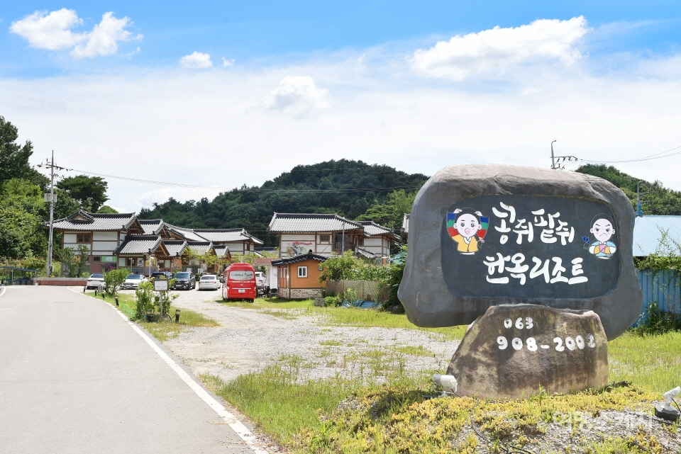

<콩쥐팥쥐>는 ‘신데렐라’ 스토리의 한 유형로서 다양한 버전이 있다. <콩쥐팥쥐> 이야기에 대한 연구는 시대와 사회의 발전에 따라 학자들이 원류의 진화, 인물 이미지 등의 관점에서 시작하여 연구의 깊이를 크게 향상시켰다.
최근 수십 년 동안 <콩쥐팥쥐> 스토리를 바탕으로 각색하거나 재창작한 영상물이 속속 등장하고 있다. 이 작품들이 보여주는 줄거리는 새로운 모습으로 관객 앞에 나타났다. 많은 작품들은 고전문학의 가치를 재조명하고 오늘날 변형된 지점들의 의미는 무엇인지 고찰할 것이다.
또한 이러한 고전 인물 비틀기가 던져준 시사점과 의의, 한계 등을 두루 살펴하면서 오늘날까지 계속 활용할 수 있는 방안에 대해 검토할 수 있다.
이는 궁극적으로 고전 문학을 잔존 문학이 아닌 시대상을 반영한 문학으로 새롭게 인식시킬 좋은 기회가 될 것이며, 오늘날 시대가 요구하는 인물 유형 및 주제(삶의 가치, 달라진 선악 판단 기준 등)에 대해 깊이 있게 탐구해보는 기회가 될 것이다.
한국 애니메이션 및 드라마, 인형극 같은 여러 미디어로도 많이 나왔는데, 강태웅 감독의 1978년작 스톱모션 애니메이션은, 본이야기의 뒷이야기를 거의 비슷하게 따라간다. 다만 결말 부분에서는, 콩쥐의 집에서 팥쥐가 보물상자 훔쳐 나오고 팥쥐 모녀가 재산 싸들고 달아나다가 갑자기 번개에 맞아 쓰러진 나무에 깔려 눈을 부릅뜬채 사망하는 최후로 끝났다. 어린 시절 이걸 보고 기겁한 아이들도 있었는데 월간 <키노>에선 호러적 묘사라고 평했다. 한국영상자료원에서 화질 개선되어 공개되었다.
한국영화 무서운 이야기에서는 팥쥐로 젓갈을 만든 부분을 모티브로 제작했다.
2004년 11월 6일 방영된 KBS의 스펀지 53회 방송분에서도 팥쥐를 젓갈로 담갔다는 내용을 밝힌 적이 있었는데, 성우 김종성의 마지막 멘트가 압권이다. "때로는 모르는 게 더 나을 수도 있습니다."
현대에 만들어진 '쌀쥐 보리쥐'라는 패러디 동화가 있다. 반편견에 대한 동화로 쌀쥐는 적극적이고 씩씩하며 농사일을 좋아하는 여자아이고, 쌀쥐의 새엄마는 그런 쌀쥐를 여자답지 못하다고 걱정하며, 보리쥐는 쌀쥐와 힘을 합쳐 일을 해내는 등 등장인물들의 성격이 바뀌었다.
몇 사람이 땅에 놀이판을 그리고, 순서를 정해서 1등을 따라하며 노는 놀이이다. ''콩쥐팥쥐''놀이와 '태극기'놀이가 있다. 콩쥐와 팥쥐는 동화로도 잘 알려져 있는데, 앞사람을 따라하는 모습이 콩과 팥으로 표현되어 놀이이름이 콩쥐팥쥐가 되었다. 태극기는 땅에 그린 놀이판 형태가 콩쥐팥쥐와는 조금 다르지만, 놀이방법은 비슷하다. 이 놀이는 땅에 그린 형태가 태극기를 닮아서 태극기라는 이름이 붙었다. 이 두 놀이는 우리 나라 전역에서 행해졌으며, 지방에 따라서 '1등 따라하기'라고 불리기도 한다.
콩쥐팥쥐의 고향-전북 완주 콩쥐팥쥐마을(앵곡마을)이다. 30여가구 작은 마을, 전래동화 테마마을로 새단장이고 천연황토방·워터파크·먹거리, 콩쥐팥쥐관광한옥리조트의 매력이다.
이곳은 어린이, 어른 모두에게 친숙한 전래동화 테마마을이다. 완주군 등에 따르면 앵곡마을은 고전소설 ‘콩쥐팥쥐전’의 배경으로 고증을 받았다. 동화 속 ‘전주 서문 밖 30리’라는 지리적 공간, 등장인물, 지명 등이 앵곡마을과 맞아떨어진다는 것이다.

'장독대'는 우리나라에서만 찾아볼 수 있는 특별한 용기이고, 한국의 문학 작품이나 민속 문화에서 쉽게 찾아볼 수 있는 것이며, '간장', '고추장', '김치' 등 우리의 소중한 음식과 연결지을 수 있기다.
장독대는 점토를 구해 건조하는 작업만 해도 2~3개월이 걸릴 정도로 장인정신이 필요한다. 옛날에는 장을 담그는 날에 고사를 지내기도 하고 자식들을 위해 장독대 위에 정안수를 떠놓고 기도도 하는 등 장독대는 우리 민족의 삶에 있어서 항상 좋은 기운을 갖고 있는 것으로 여겨졌다. 그리고 지역마다 그 지형의 특징에 맞춰 약간씩의 차이도 있었다고 한다.
활용 방안
21세기 문화콘텐츠는 무엇보다 현실성이 담보되어야 한다. 오늘날 시도해 볼 수 있는 <콩쥐팥쥐> 문화콘텐츠 활용 방안을 두 가지로 정리해보면 다음과 같다.
첫째, 전형적 인물 비틀기를 통해 고정된 시각 탈피할 것이다.
둘째, 계모, 팥쥐, 장쇠 같은 악인형 인물을 처단, 복수하는 것에서 벗어나, 그들을 악인으로 내몬 시대적 문제점은 무엇이고 그들을 감싸 안기 위해 우리는 무엇을 해야 하는지 고민해 볼 수 있다.